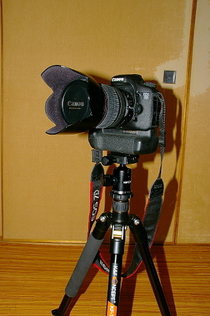

2018 年
09 月 10日 ( 月 )
K&F Concept KF-TM2324 を使って撮影してみた
日付が前後しますが 5 日に K&F Concept KF-TM2324 を使って撮影してきました。普通に下の写真のように使ってです。

18 時 20 分の日没あたりの空を撮ろうと思って路線バスに乗ったのですが現地に着くのが 16 時 40 分頃と早すぎました。なので下のような写真をしばらくは撮っていました (画像をクリックすると Flickr に飛びます)。が殆どの時間はぼーっと立って時間がすぎるのを待つ時間でした。


18 時 10 分頃になってやっと日が沈みかけてきました。

18 時 30 分くらいになってやっと空が焼けました。

それで家に帰ってから現像してとある海外のサイトにアップしたところ、お前の写真は下が真っ暗でなにも写ってなくてゴミだ、全く価値はねぇ、なんで HDR をしねぇんだ？というようにボロクソに言われまして (ボロクソに言ったのは Flickr の人ではありません。Flickr のユーザは紳士淑女だと思います。意見を言うときにも礼儀をわきまえてます。Fstoppers のユーザは口のきき方をしりません。私は覚えました)、HDR に初挑戦したのが下の写真になります。なんか不自然で私は嫌いなんですけど。

それで今日は三脚の第二形態のテスト撮影をしてきました。

地面に三脚を置ければよかったのですが人通りが少なくなく、仕方がないので 30cm ばかり高い椅子のようなものの上に三脚を置いて撮影したのが下の写真になります (Flickr には飛びません)。

レンズの高さが地面から 35cm ほどの高さになってしまったので、三脚の第二形態の効果の程はいまいちわからいものになってしまいました。残念です。ちなみにアングル等はファインダーを物理的に覗けないのでまったくのヤマカンで撮りました。焦点距離は 18mm、ピントは 2m に合わせ、F 値は F22 固定です。これもこうであれば大丈夫だろうというヤマカンです。
- Category :
- 日記
- カメラ
- 写真
- 三脚
- K&F Concept
- KF-TM2324
- HDR